Entrega Extraordinaria – quim castel
En este proyecto se desarrolla el Reto Intro al Big Data, cuyo objetivo es aplicar conceptos de computación en la nube y análisis de datos reales. A lo largo de la práctica se ha trabajado con servicios de Amazon Web Services y con la herramienta Tableau para la visualización y análisis de datos.
En esta sección se ha desplegado un servidor web básico utilizando Amazon EC2. El objetivo es comprender el funcionamiento de las instancias, los grupos de seguridad y la publicación de un servicio web accesible desde Internet.
Se ha creado una instancia EC2 con protección contra terminación activada, permitiendo observar su estado y configuración desde la consola de AWS.
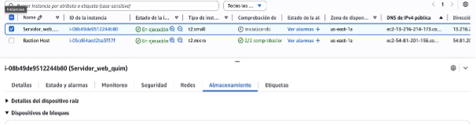
Se ha instalado un servidor web Apache en la instancia EC2 y se ha publicado una página web sencilla para comprobar el correcto funcionamiento del servicio.
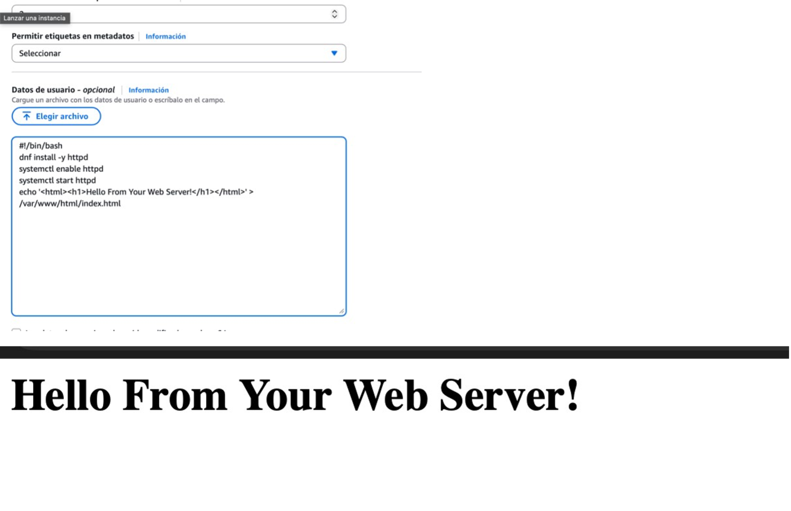
Se ha consultado el presupuesto estimado del uso de los recursos en AWS, permitiendo analizar el impacto económico del despliegue realizado.
Coste total aproximado: 76,5 € / mes
Costes estimados mediante calculadora del proveedor cloud (región UE). Pueden reducirse usando instancias reservadas o escalado automático.
En esta sección se ha desplegado una arquitectura web más avanzada, incorporando balanceo de carga y autoescalado para mejorar la disponibilidad y escalabilidad del servicio.
Se ha creado una imagen AMI personalizada a partir de una instancia EC2 configurada previamente, que será utilizada para el autoescalado.
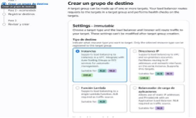
Se ha configurado la infraestructura de red necesaria mediante una VPC, subredes y grupos de seguridad.
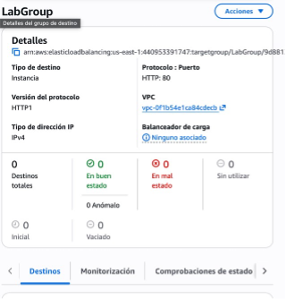
Se ha configurado un Elastic Load Balancer para distribuir el tráfico entre las distintas instancias disponibles.
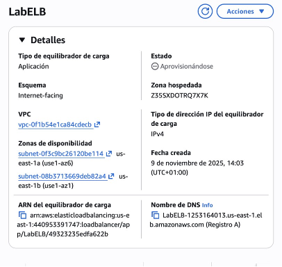
Este gráfico de barras muestra el promedio de bicicletas disponibles en cada estación. Permite comparar qué estaciones tienen mayor o menor disponibilidad de bicicletas. Se aplican filtros por año y por estación para analizar comportamientos concretos.
Este mapa de calor representa la disponibilidad media de docks según el día y la hora. Permite identificar patrones de uso y franjas horarias con mayor demanda del servicio. Se utilizan filtros por estación y un rango de fechas consecutivas.
Se ha definido un grupo de Auto Scaling que permite aumentar o reducir automáticamente el número de instancias según la carga del sistema.
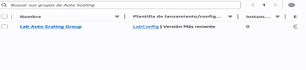
Se han creado alarmas en CloudWatch para monitorizar el comportamiento del sistema y activar acciones automáticas cuando se superan determinados umbrales.
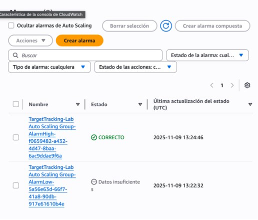
Se ha creado un proyecto en Tableau utilizando los datos del sistema Bicing. Se han desarrollado distintos gráficos que permiten analizar la disponibilidad de bicicletas y docks, integrándolos en un dashboard con filtros compartidos.
El dashboard incluye indicadores, gráficos y filtros que afectan a todos los elementos, facilitando el análisis interactivo de los datos.
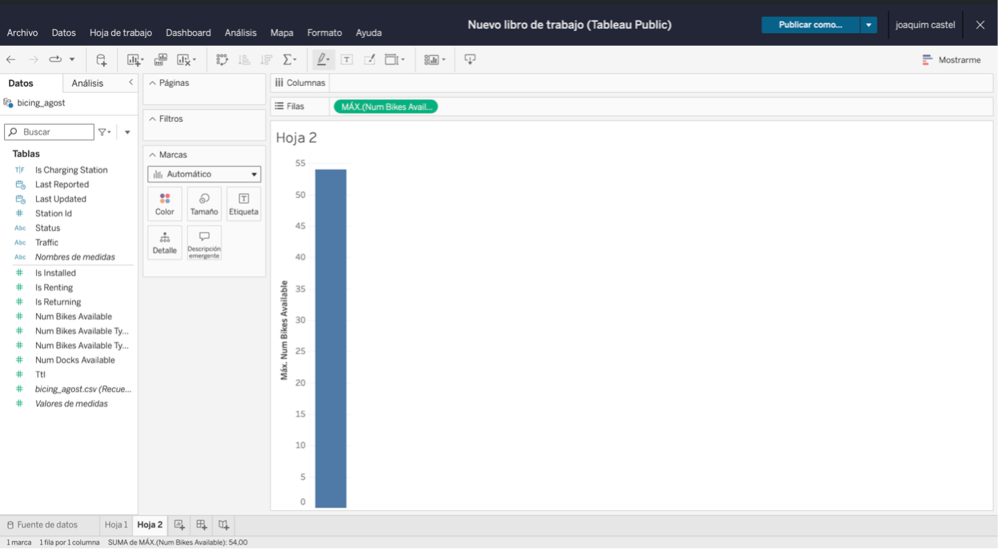
Se han representado dos campos en función del tiempo, aplicando filtros por estación y eliminando valores nulos para asegurar la calidad de los datos.
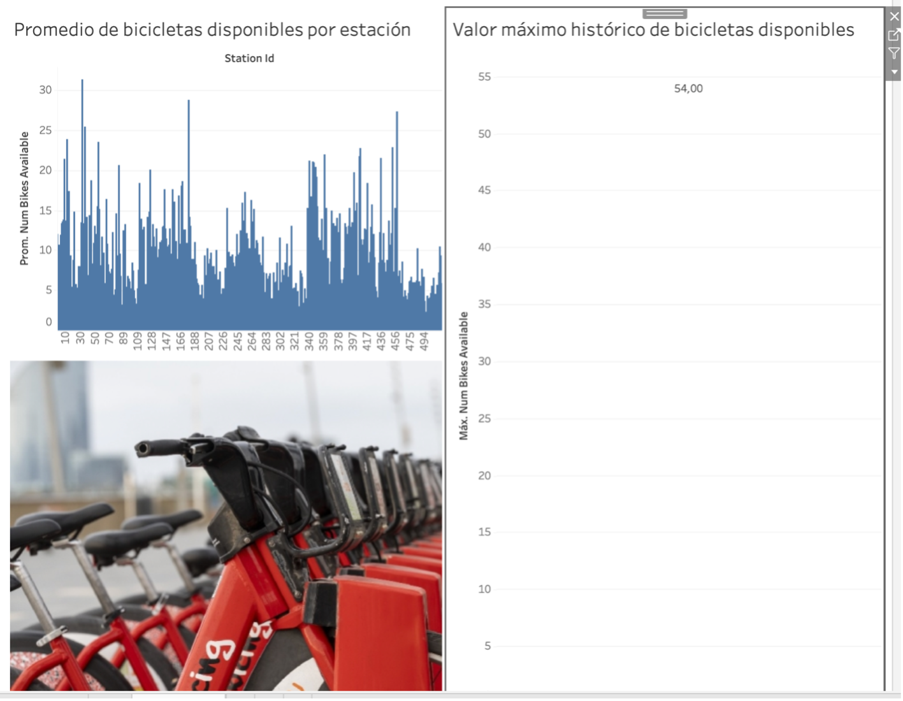
Se ha creado un campo calculado que genera una alerta cuando el número de docks disponibles alcanza el 90% del valor máximo histórico de la estación.
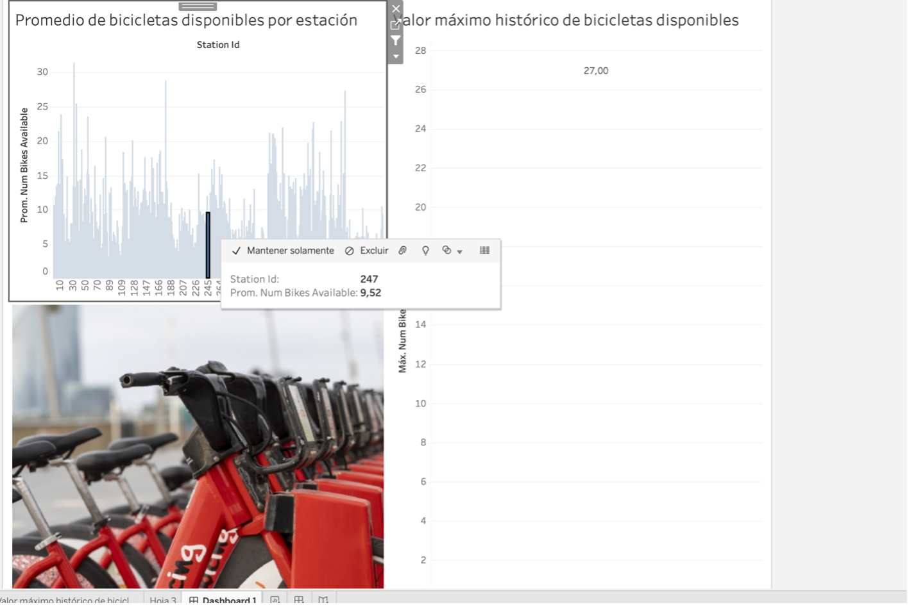
En esta captura se muestra la fórmula utilizada para la creación del campo de alerta, aplicada manualmente según el criterio definido.
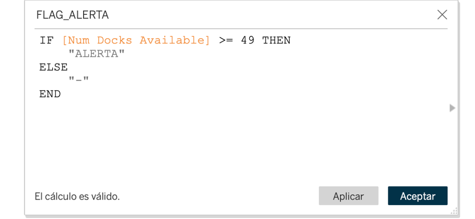
El campo de alerta se ha incorporado a un gráfico temporal, permitiendo identificar claramente los momentos en los que se activa el aviso.
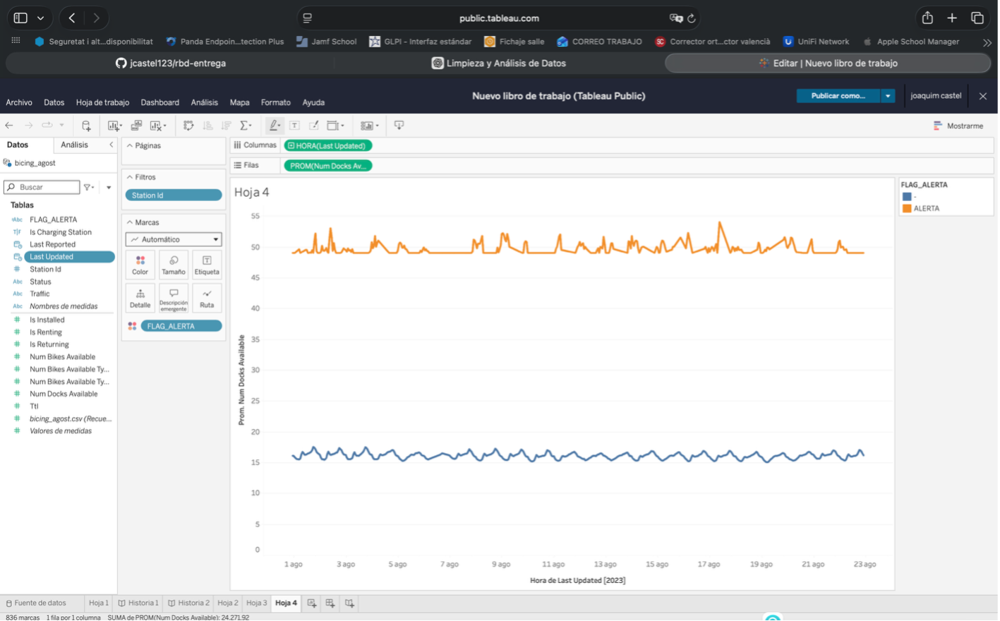
Se ha analizado un periodo de 15 días consecutivos, observando patrones tanto diarios como horarios en la disponibilidad de docks.
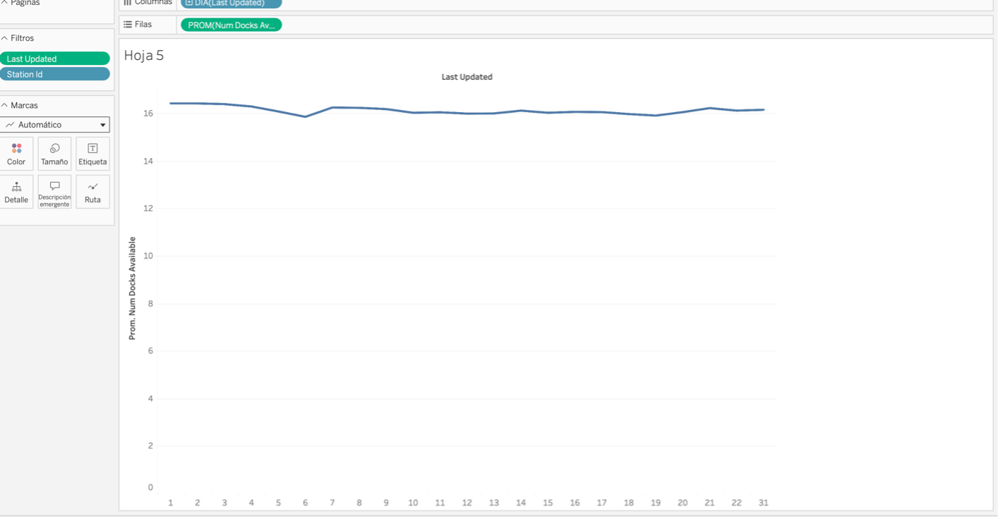
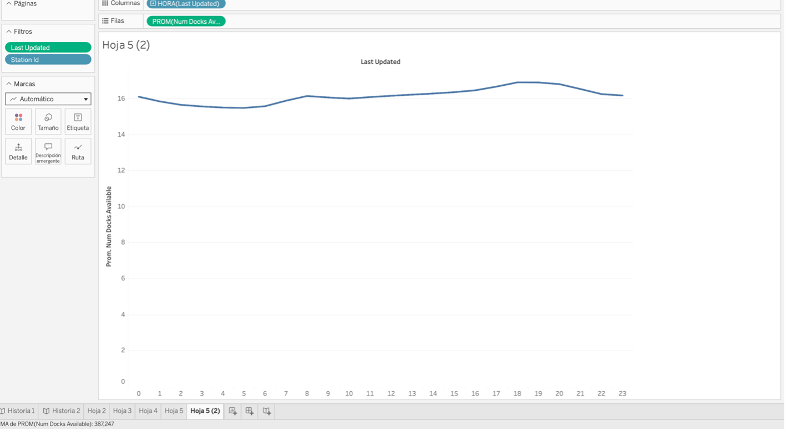
Se ha aplicado un pronóstico a futuro basado en el histórico de los datos, mostrando una evolución estable del sistema.
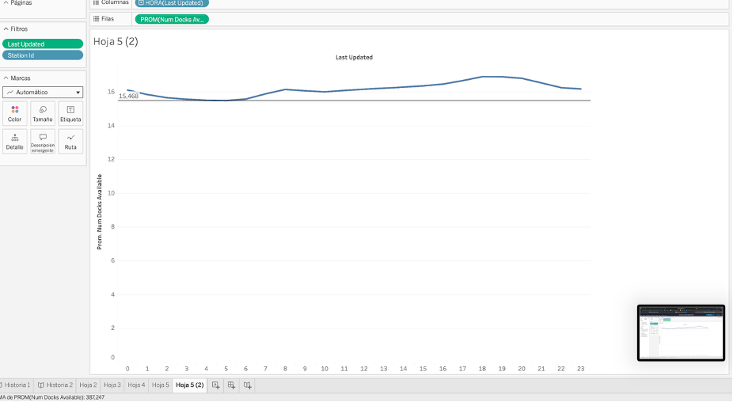
La Story incluye una página de inicio con texto e imagen que introduce el análisis realizado.
El análisis realizado demuestra la utilidad de la limpieza, el procesado y el análisis de datos para mejorar la gestión del sistema Bicing. Se identifican patrones de uso y se facilita la toma de decisiones mediante alertas y pronósticos.